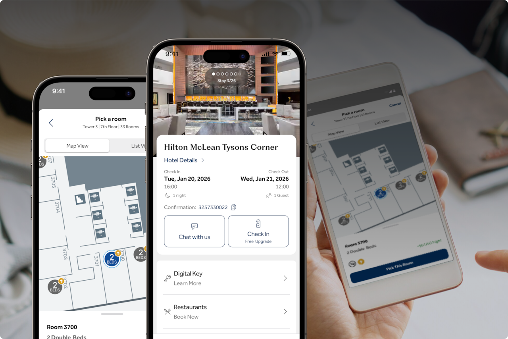

我把希尔顿荣誉客会嵌进了出差工作流，从预订到保级一套链跑通
以前每次住希尔顿都是临时抱佛脚：积分够不够、晚数还差多少、退房忘确认——现在用一套固定节奏把这件事自动化了，看看具体怎么接。
我每个月大概要出差三到四次，住希尔顿系的酒店居多。以前这件事在我的待办里永远是个"无头苍蝇"状态：出门前才想起查积分够不够换免费房，住完才记起来这个晚数算不算进保级考核，季度末翻 App 才发现有一批积分快过期了——少的时候损失几百，多的时候大几千分直接归零。
后来我去 Hilton Honors官网 注册后，把它当成了工作流里一个正式的节点，和行程安排、报销、甚至笔记软件串成了一条链。现在每次出差前、入住中、退房后、季度末，都有固定的动作，不用再临时想。这篇就讲这套流程具体怎么拼起来，每个环节卡在哪、有什么坑。
旧流程：散兵游勇的问题
先说说以前的问题，你对照一下自己中了几条：
- 预订靠感觉：不知道自己账户里有多少积分，也不知道这家酒店积分兑换值不值——有时候现金订了才发现全额积分房只需要 8,000 分，亏了一半
- 晚数算不清：荣誉客会的考核周期是"会籍年度"（从你注册的那个月开始算），不是自然年。我以前一直按 12 月 31 日算，结果某次差了 2 晚没保上金会籍
- 入住效率低：要额外毛巾、问早餐几点、延迟退房——要么打电话（前台忙的时候等十分钟），要么自己跑一趟（穿拖鞋下楼很狼狈）
- 积分过期无预警：24 个月没活动就过期，我有一次发现 12,000 分过了期才想起这个规则
- 转账操作忘记：想和老婆合并积分，不知道是用积分转账还是积分池，两个功能搞混了好一阵
这些问题单看都不大，但每次出差都要重新想一遍，积起来就是很多精力。现在的流程把它们都固化了。
新流程：四个节点串起来
整套流程我分成四个固定节点：出差前 → 入住中 → 退房后 → 季度复盘。每个节点用希尔顿荣誉客会 App / 官网作为核心，外围接几个我日常已经在用的工具——不需要装新东西。
节点一：出差前（预订决策 + 保级追踪）
这一步解决两个问题：用积分还是现金订、这个晚数进不进保级考核。
我的做法是把自己的会籍年度和保级门槛记在 Excel 里，每次出差前拉行程表的时候顺手做两件事：
- 打开从 Hilton Honors下载 拿的 App，进入预订页面搜要住的酒店，对比"现金价"和"积分价"。如果积分兑换的价值超过每分 0.01 美元（行业常用的一个参考线），就用积分订；否则现金。这个判断不用算数——App 里直接显示两种价格，肉眼一看就知道
- 算一下这次入住后，当前会籍年度的晚数累积到多少了。比如我金会籍保级需要 25 晚，现在已经 21 晚了，这次住 3 晚就到 24——那下次出差只要再 1 晚就稳了。这个数我存在 Excel 一个固定格子里，每次出差前看一眼就行
这里有个容易断的地方：会籍年度不是自然年。如果你是 6 月注册的，考核周期就是 6 月 1 日到次年 5 月 31 日。很多人在 12 月底以为"快到年度结束了"其实离真正的考核截止还有半年。我会把自己的会籍年度截止日用红色标在 Excel 里，防止搞混。

节点二：入住中（App 聊天当前台传话器）
以前要额外毛巾得打电话，现在我直接在 App 里发消息。这个功能叫"酒店聊天"，在你的当前预订页面有个对话气泡图标，点进去就能向前台发文字消息，和微信聊天一模一样。
适合用聊天搞定的事我列了个清单，每次住店碰到直接发：
| 需求 | 消息模板 |
|---|---|
| 额外毛巾 | "麻烦给 1203 房送两条额外毛巾，谢谢" |
| 早餐时间 | "请问早餐几点到几点？在几层？" |
| 延迟退房 | "我今天能延迟退房到下午 2 点吗？（金会籍）" |
| 叫车 | "能帮我叫一辆出租车到机场吗？我 3 点要出发" |
| 报修 | "房间洗手间灯坏了，麻烦来看一下" |
技巧有两个：消息里一定带房间号（系统虽然自动关联了但写上更保险），急的事别等聊天——如果是房间安全问题直接打电话或跑前台。聊天适合不急的便利请求，前台通常几分钟到一小时内会回复。
这个功能完全免费，所有会员等级都能用。我第一次用的时候还有点不好意思，现在已经躺床上发消息成习惯了，少了两次穿拖鞋跑前台的尴尬。
节点三：退房后（晚数登记 + 积分确认）
退房这件事最容易漏确认。我退房当天会做两个固定动作：
- 在 App 里确认合格晚数到账。荣誉客会的合格晚数是自动累积的，通常退房后 24~72 小时内更新。我会在退房后的第三天打开 App 看一眼晚数有没有加上——没加的话可以联系客服补登（偶尔会有系统延迟）
- 把晚数同步到 Excel 的保级追踪表。这个动作我在 Excel 里留了个专门的"本次新增晚数"格子，填上之后自动算出累计。这样出差多的时候不用自己心算，打开 Excel 就知道还差几晚
积分方面，全额积分兑换的房晚也算合格晚数——这一点很多人不知道。所以积分房晚既能帮你省现金，又能攒保级晚数，是优先级最高的用法。
节点四：季度复盘（积分过期 + 转账救急）
每三个月我会花十分钟做一次积分健康检查，重点看两个东西：
第一，有没有快过期的积分。荣誉客会的积分规则是 24 个月内没有任何积分活动（赚取或消耗）就会过期归零。我会在 Excel 里给积分余额旁边加一列"最后活动日期"，季度复盘时算一下离 24 个月还有多久。如果只剩两三个月了，就找最便宜的方式做一次积分活动：
- 最简单的：捐赠 1,000 分给慈善组织——在官网积分兑换页面直接操作，既是公益又能重置 24 个月倒计时
- 和老婆互救急：双方各转给对方 1,000 分，转出和接收都算积分活动，两边的过期倒计时都重置了。这个操作完全免费，即时生效
第二，要不要做积分转账。荣誉客会有积分转账功能（和积分池是两个独立功能），一个人直接把积分转给另一个人，去 Hilton Honors文档 翻了下限额，年度上限 500,000 分转出 / 2,000,000 分接收。我和老婆偶尔会做一次把积分合并到一个账户，这样换免费房的时候积分池更大。
这里踩过一个坑：积分转账是永久性转移，不能撤回。我第一次转的时候没确认接收方信息，输错了一个数字，虽然对方账户不存在转账失败没扣积分，但还是吓了一跳。所以转账前务必核对会员号和姓名——系统会自动验证但最好自己也再看一遍。

效果和边界
这套流程跑了半年，体感上最明显的变化是少了很多"想起来才去做"的事：
- 保级晚数以前靠手机备忘录记，现在 Excel 自动算，每次出差前打开就知道进度
- 积分过期清零的事没再发生过，季度复盘时提前两三个月就能看到预警
- 入住期间的便利请求不用打电话也不用跑前台，App 聊天发了就等
- 预订时不用纠结现金还是积分，App 里对比一下就有结论
当然这套流程也有边界，不是万能的：
- 如果一个季度一次希尔顿都不住，那保级肯定没指望——这不是流程能解决的，是出差频次的问题
- 积分兑换航空里程的性价比很低（1 分 ≈ 0.5~0.7 航司里程），我从来不转，快过期了要么捐赠要么转给老婆重置倒计时
- 曜钻会籍是邀请制，普通人不用想，我这套流程主要针对普通到钻石会籍的升级和保级
另外，希尔顿的系统偶尔会有延迟——晚数 72 小时没更新、聊天功能某家酒店没开、转账几分钟没到账——这些都不是流程的问题，重跑或联系客服就行。App 和官网的信息以官网为准，有些活动只在网页端有。
这套资料覆盖了会籍等级、积分赚取消费、合作伙伴兑换、App 使用这些常用场景。GitHub 上是主仓库，国内访问慢的可以走 Gitee 或 GitCode 的镜像。我平时用到的时候直接搜关键词就行，比翻官方资料快。具体到哪个环节不确定了，就对着看一下参数和操作步骤——毕竟希尔顿的规则偶尔也会调一下，有个统一的参考源挺省心的。